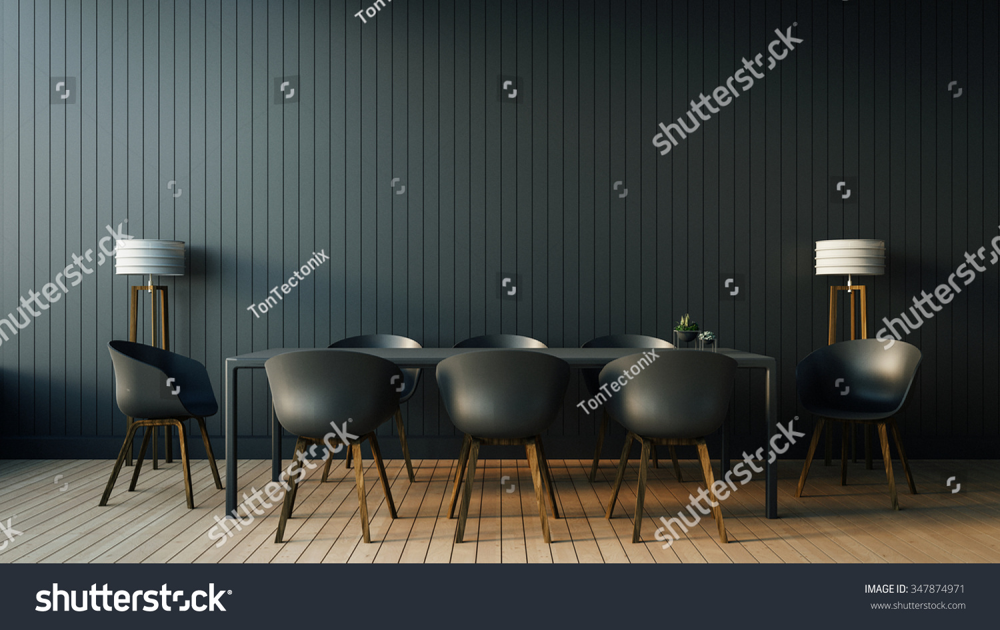

DYT’s first product began in founder Kshitij Rai Handa’s studio apartment in Dublin back in 2020.
The founding members of DYT have known each other for more than 10 years.
Together they have a combined experience of 20+ years of working in industries including Investment Banking,
Financial technology, Product management, Robotic Process Automation, Artificial Intelligence, Machine Learning, Image Processing, IoT (Internet of Things) Quantum Nanodevices.

Kshitij Rai Handa
(CEO)
Originally from Delhi Public School Vansant Kunj, Kshitij graduated from the University of Delhi with a Bachelors in Commerce (H) and Masters of Sciences in Financial Technology from National College of Ireland.
He has previously worked in investment banking providing transaction support and execution in leveraged buy-outs of technology companies across multiple sectors.
He has also worked as a Product Manager for a leading European banking technology startup in Ireland and helped design the offerings of the digital bank proposition.
At DYT, he leads the business development, overall strategy, and direction of the firm.
While his specialization is in blockchain, he was an excellent footballer for his school and college football team.
His passion for sports led him to start a sports technology company and believes if, given the right infrastructure to improve player development,
India will qualify for the 2026 FIFA World Cup.
Dr. Rohit Prasad
(CTO)
Originally from Delhi Public School R K Puram, Dr. Rohit Prasad graduated from National Institute of Technology, Jalandhar with an Engineering degree
in Computer Science and Technology, Masters of Science, Technology, and Healthcare in Electrical, Electronics, Automation and Industrial Engineering
with specialization in Automatic Systems (Image and Telecommunications) from Institut National Des Sciences Appliquées (INSA), Lyon.
He also holds a PhD. in Materials, Mechanical, Optics, and Nanotechnology from Laboratory of Excellence (LABEX) ACTION. Rohit is a
technology leader with 8+ years of working in emerging technologies, including AI/ML, image processing, IoT, and nanotechnology and
was previously working for a defense technology company as a technology leader. At DYT, he leads our technology squad to build the best
in class technical infrastructure for performance and scalability.
Nipun Rai Handa
(CPO)
Nipun earned his Bachelor of Technology in Electronics and Telecommunication Engineering from Jaypee Institute of Information Technology
and Masters of Sciences in Digital Innovation from University College of Dublin. He has 8+ years of experience in Business & Technology
consulting, working for International clients and leading global cross-functional teams to deliver innovative products at scale while consistently
achieving high customer adoption across multiple product lines business P&L ownership. He has worked for fortune 500 companies through-out his
career, including Accenture, Pramerica systems, and United Healthcare Group, with an exemplary track record. At Decoding Youth Talent, he is
responsible for ensuring each product’s expansive list of features stays ahead of the curve, roadmap development, product execution, and delivery.
 -->
-->